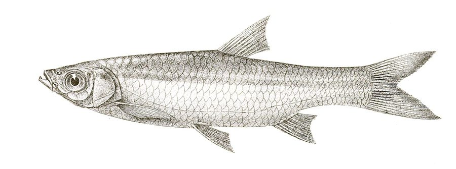

बंगाली बार्ब मछलीBengali Barb
Megarasbora elanga · Cyprinidae · FSH-0071

- Scientific name वैज्ञानिक नाम
- Megarasbora elanga (Hamilton, 1822)
- Family कुल
- Cyprinidae
- Hindi हिंदी
- बंगाली बार्ब मछली
- Local names स्थानीय नाम
- bengali barb, elanga machhli, rasbora elanga, elanga, dahari
- Status here यहाँ की स्थिति
- native
- Movement आवागमन
- Resident, here all year
- Known from कहाँ दर्ज
- Others have published records from the wider Awadh–Purvanchal plain, none yet from Basti–Ayodhya अवध–पूर्वांचल से दूसरों के प्रकाशित अभिलेख, बस्ती–अयोध्या से अभी नहीं
- IUCN IUCN
- not evaluated
- Review समीक्षा
- not yet reviewed
When to look कब देखें
Present all year. साल भर मौजूद।
Uses and possibilities उपयोग और संभावनाएँ
Drawn from the documented uses in the profile below, where each is labelled traditional, current or a research lead. All uses →
Tell it apart from इनसे अलग पहचानें
बंगाली बार्ब मछली / Bengali Barb
Megarasbora elanga (Hamilton, 1822) — Cyprinidae
बंगाली बार्ब मछली — उत्तरी और पूर्वी भारत की मैदानी नदियों, स्वच्छ नालों, तालों और जलमग्न आर्द्रभूमियों में पाई जाने वाली एक सुंदर, पतली और अत्यंत फुर्तीली देशी कार्प मछली है। इसका शरीर लंबा, चपटा और चांदी जैसा चमकदार होता है, जिसके पार्श्व पर एक चमकीली धूसर-नीली या सीसे जैसी अनुदैर्ध्य पट्टी होती है। इसका मुंह छोटा और तिरछा होता है तथा निचले जबड़े पर एक छोटा उभार होता है जो ऊपरी जबड़े के खांचे में बैठता है। इसके ऊपरी होंठ के पास केवल एक जोड़ी छोटी मूंछें होती हैं। यह पानी की मध्य और ऊपरी सतह पर तैरती हुई जलीय कीड़ों, प्लवक और सूक्ष्म शैवालों को खाती है। स्थानीय हाट-बाजारों में यह एक लोकप्रिय छोटी खाद्य मछली है।
Quick Identification त्वरित पहचान
| Feature | Description |
|---|---|
| Size | Small-to-medium cyprinid; reaches about 21 cm TL (Froese & Pauly 2025) |
| Body Shape | Elongate, moderately compressed, slender and streamlined (Hamilton 1822) |
| Mouth & Snout | Mouth small, obliquely directed upwards; symphysial knob on lower jaw fitting upper notch (Talwar & Jhingran 1991) |
| Barbels | A single pair of short rostral barbels; maxillary barbels absent or rudimentary (Talwar & Jhingran 1991) |
| Colour Pattern | Silvery with greenish-grey back; a lead-coloured or bright silvery lateral stripe along flank (Talwar & Jhingran 1991) |
| Dorsal Fin | Short-based, inserted behind pelvic fins; 2–3 unbranched and 7–8 branched rays, lacking a spine (Hamilton 1822) |
| Scales | Moderate cycloid scales; 40 to 44 scales along complete lateral line (Talwar & Jhingran 1991) |
Field tip: Look in slow-moving river margins and oxbow lakes among aquatic weeds. A slender, silvery minnow with an oblique mouth bearing a lower jaw knob, a single pair of short rostral barbels, and 40–44 lateral line scales, is Megarasbora elanga.
हिंदी: यह चांदी जैसी चमकने वाली पतली मछली है जिसके किनारे पर एक हल्की नीली-धूसर पट्टी होती है। इसका मुंह ऊपर की ओर तिरछा होता है और थूथन पर केवल एक जोड़ी छोटी मूंछें होती हैं।
Morphology आकारिकी
Size as given by FishBase (Froese & Pauly 2025):
| Measurement | Range | Notes |
|---|---|---|
| Maximum length | 21 cm TL | Froese & Pauly (2025), FishBase |
| Lateral line scales | 40–44 | Complete, gently decurved along the belly |
| Dorsal fin rays | ii–iii, 7–8 | Inserted behind pelvic origin (Hamilton 1822) |
| Anal fin rays | ii, 5 | Standard configuration (Talwar & Jhingran 1991) |
| Pectoral fin rays | i, 14 | Pointed, reaching toward pelvic origin (Talwar & Jhingran 1991) |
| Pelvic fin rays | i, 8 | Abdominal insertion (Talwar & Jhingran 1991) |
The body is elongate, slender, and distinctly compressed laterally (Hamilton 1822). The dorsal and ventral profiles are evenly contoured, giving the fish a sleek, hydrodynamic shape adapted for rapid swimming in open water. The head is pointed and moderately compressed. The mouth is small, oblique, and directed upwards (Talwar & Jhingran 1991). The lower jaw possesses a prominent symphysial knob at its tip that fits into a corresponding depression in the upper jaw when the mouth is closed. A single pair of short rostral barbels is present at the front of the snout; maxillary barbels are typically absent or present only as minute vestiges (Talwar & Jhingran 1991).
Live coloration is silvery with an olive-green or greyish-brown dorsum (Talwar & Jhingran 1991). A distinct lead-coloured or shimmering silvery-blue band runs longitudinally along the middle of each flank from behind the opercle to the base of the caudal fin. The fins are hyaline or faintly yellowish; the caudal fin is deeply forked with dusky margins (Hamilton 1822).
हिंदी: शरीर लंबा, पतला और दोनों तरफ से चपटा होता है। मुंह थोड़ा ऊपर की तरफ मुड़ा होता है और निचले जबड़े की नोक पर एक उभार होता है जो मुंह बंद करने पर ऊपरी जबड़े के खांचे में बैठ जाता है। रंग ऊपर से हरा-भूरा और नीचे से चमकदार चांदी जैसा होता है।
Behaviour & Ecology व्यवहार और पारिस्थितिकी
The Bengali Barb is an active, shoaling pelagic fish inhabiting both flowing and standing freshwaters (Talwar & Jhingran 1991). It frequents slow-moving river margins, clear streams, oxbow lakes (tals), floodplain depressions, and large ponds with submerged vegetation.
Adults swim in mid-water and near the surface in active schools of several dozen individuals. They are agile swimmers capable of quick darting bursts to capture floating insect prey or evade predators. With their upturned mouths, they forage predominantly in the upper half of the water column, taking surface insects, emerging pupae, and suspended plankton (Talwar & Jhingran 1991). During the high-water monsoon season, schools move outward into newly inundated paddy fields and floodplain channels to feed and breed, returning to deeper perennial oxbows as floodwaters recede.
हिंदी: यह मछली पानी की ऊपरी सतह पर झुंड बनाकर तैरती है। यह बहुत फुर्तीली होती है और पानी की सतह पर तैरने वाले कीड़ों और प्लवक को तेजी से लपकती है। वर्षा ऋतु में यह खेतों और नए भरे तालों में फैल जाती है और पानी कम होने पर स्थायी तालों में आ जाती है।
Life Cycle / Phenology जीवन चक्र
Seasonal phenology in northern Indian floodplains across the agricultural year (Talwar & Jhingran 1991):
| Season / Month | Stage | Field Observation |
|---|---|---|
| June–July (Monsoon onset) | Breeding dispersal | Schools disperse into inundated marginal shallows and wetland edges (Talwar & Jhingran 1991) |
| July–August (Kharif peak) | Spawning & breeding | Spawning occurs in weed-choked shallows during heavy rains |
| September–November (Post-monsoon) | Juvenile growth | Dense shoals of fry and fingerlings forage among aquatic plants (Talwar & Jhingran 1991) |
| December–February (Rabi winter) | Oxbow congregation | Sub-adults and adults gather in perennial oxbow lakes and river backwaters |
| March–May (Summer / Zaid) | Surface feeding | Active schooling and feeding on early insect hatches in warm shallows |
Breeding takes place during the southwest monsoon from June to August (Talwar & Jhingran 1991). Rising water levels and warmer ambient temperatures stimulate ripe adults to congregate in shallow, heavily vegetated floodplain margins. Females scatter adhesive eggs among fine submerged plants and rootlets. The eggs hatch after a few days, and the tiny larvae attach to submerged leaves until their yolk sacs are absorbed, after which they begin feeding on micro-zooplankton.
हिंदी: प्रजनन वर्षा ऋतु (जून से अगस्त) के दौरान घने जलीय पौधों वाले उथले पानी में होता है। मादा अपने अंडे जलीय घासों और जड़ों पर बिखेर देती है। कुछ ही दिनों में अंडों से बच्चे निकल आते हैं और वे पानी में मौजूद सूक्ष्म जीवों को खाकर तेजी से बड़े होते हैं।
Diet and Feeding Behaviour आहार
Megarasbora elanga is an opportunistic pelagic omnivore (Talwar & Jhingran 1991):
Natural diet components:
- Aquatic insects, including water striders, backswimmers, and chironomid midge pupae taken at the water surface.
- Micro-crustaceans such as cladocerans, copepods, and ostracods filtered from open water (Talwar & Jhingran 1991).
- Unicellular and filamentous green algae, diatoms, and fine suspended plant debris.
- Terrestrial insects (small flies, ants) that fall onto the surface film.
हिंदी: यह सर्वाहारी मछली है। यह पानी की सतह पर तैरने वाले मच्छर के लार्वा, पानी के कीड़े, सूक्ष्म प्लवक और कभी-कभी काई व पौधों के बारीक रेशों को खाती है।
Predators / Natural Enemies शत्रु
Documented natural predators in northern Indian freshwater ecosystems:
- Piscivorous fishes: Large river and wetland predators like Wallago attu (Striped Catfish), Bagarius bagarius (Goonch), and Chitala chitala (Clown Knifefish) prey on adults and schools.
- Waterbirds: Little egrets, pond herons, kingfishers, and cormorants foraging along wetland margins.
- Aquatic snakes: Checkered keelbacks hunt schooling minnows in shallow vegetated margins.
- Predatory aquatic insects: Giant water bugs and dragonfly nymphs prey heavily on young juveniles.
हिंदी: बोआल, गूंज, चीतल, बगुले, जलकौवे और पनिहा सांप इस छोटी मछली के प्रमुख शिकारी हैं।
Agricultural / Human Relevance कृषि प्रासंगिकता
Nutritional and food market value: The Bengali Barb is a popular small food fish across northern and eastern India. Captured with cast nets, dip nets, and small-mesh gill nets in oxbow lakes and floodplains, it is eaten whole (often fried or cooked in spicy mustard gravies) and provides vital calcium, phosphorus, and essential fatty acids to rural families.
Natural mosquito control: Because of its surface-foraging habits, Megarasbora elanga actively consumes mosquito larvae and pupae in floodplain marshes, aiding in the ecological regulation of wetland vector insects.
Traditional: A traditional staple food minnow widely harvested across eastern Uttar Pradesh and Bengal.
Today: Sold in mixed small-fish baskets in rural haats and local village fish stalls.
Research direction (a lead, not a result): Assessing captive breeding techniques for indigenous aquarium trade and small-scale homestead pond stocking.
हिंदी: यह ग्रामीण इलाकों में खाई जाने वाली एक स्वादिष्ट और पौष्टिक छोटी मछली है। यह पानी की सतह पर मच्छरों के लार्वा को खाकर मलेरिया और अन्य बीमारियों को रोकने में भी मददगार साबित होती है।
Expected Locally स्थानीय रूप से अपेक्षित
Not a field record. Written from published accounts for eastern Uttar Pradesh. No confirmed local sighting yet — if you have seen it, that is what the atlas needs.
अभी तक स्थानीय पुष्टि नहीं। यह विवरण प्रकाशित स्रोतों से है, किसी अवलोकन से नहीं।
The Bengali Barb is expected across eastern Uttar Pradesh in perennial rivers, large flowing streams, oxbow lakes (tals), and major canal systems. Look in river pools and flowing glides from August through January. GBIF holds published records from the wider Awadh–Purvanchal plain, none yet from Basti–Ayodhya. A voucher photograph showing the slender body, oblique mouth with symphysial knob, lateral lead stripe, and 40–44 lateral line scales, submitted via the About page, would confirm the first local documentation for the project area.
Distribution वितरण
Global range: Widespread across South Asia, occurring natively in India, Bangladesh, Nepal, and Myanmar (Talwar & Jhingran 1991).
In India: Distributed throughout the Ganges and Brahmaputra river drainages, through Uttar Pradesh, Bihar, West Bengal, and Assam (Menon 1999).
In Uttar Pradesh: Recorded in the Ganges, Ghaghara, Rapti, and Gomti river networks, oxbow lakes, and wetland reservoirs.
In Basti district / eastern UP: Expected as a resident native species in the Kuwano and Ghaghara floodplains, oxbow lakes (tals), and permanent village wetlands.
हिंदी: यह भारत, बांग्लादेश और नेपाल के मैदानी इलाकों में पाई जाती है। उत्तर प्रदेश में यह गंगा, घाघरा, राप्ती और गोमती की घाटी के तालों और आर्द्रभूमियों में मिलती है।
Research Questions शोध प्रश्न
- How do flood control embankments and sluice gates impact the seasonal migration of Megarasbora elanga between rivers and oxbow lakes? / बांधों और तटबंधों के बनने से इस मछली के तालों में आने-जाने पर क्या असर पड़ा है?
- What is the quantitative consumption rate of mosquito larvae by Megarasbora elanga compared to introduced larvivorous fishes?
- What environmental factors trigger schooling dispersal and reproductive spawning in shallow vegetated floodplains? / किन पर्यावरणीय कारणों से यह मछली उथले जलमग्न क्षेत्रों में अंडे देती है?
- Does Megarasbora elanga in the Gangetic plain exhibit genetic divergence from the Brahmaputra type locality populations?
- How resilient are wild populations of Megarasbora elanga to intensive seasonal harvesting using small-mesh shore seines?
Similar Species मिलती-जुलती प्रजातियाँ
| Species | Key Differences | |
|---|---|---|
| Megarasbora elanga (Bengali Barb) | Slender body; oblique mouth with symphysial knob; single pair of short rostral barbels; 40–44 lateral line scales (Talwar & Jhingran 1991) | |
| Rasbora daniconius ([[slender_rasbora\ | Slender Rasbora]]) | Barbels completely absent; prominent blue-black lateral stripe bordered by golden line; 31–34 lateral line scales (Talwar & Jhingran 1991) |
| Devario devario ([[sind_danio\ | Sind Danio]]) | Body much deeper and diamond-shaped; lacking barbels; 35–38 lateral line scales |
| Amblypharyngodon mola ([[mola_carplet\ | Mola Carplet]]) | Body deeper; lateral line incomplete (stops after 9–10 scales); scales very small (65–75 in longitudinal series) |
Field rule: A slender silvery minnow with an oblique mouth, symphysial knob on the lower jaw, a single pair of short rostral barbels, and 40–44 lateral line scales, is Megarasbora elanga.
हिंदी: रासबोरा डैनिकोनियस में मूंछें नहीं होतीं और तराशे बड़े होते हैं, जबकि बंगाली बार्ब में छोटी मूंछें होती हैं और 40 से 44 बारीक तराशे होते हैं।
Taxonomy & Classification वर्गीकरण
Original description. Described by Francis Hamilton in 1822 as Cyprinus elanga in An Account of the Fishes Found in the River Ganges and Its Branches, page 281. Type locality: Rivers and ponds of Bengal.
Subspecies. Monotypic — no subspecies are recognized across its continental range.
Family and order placement. Order Cypriniformes, family Cyprinidae (or Danionidae in recent molecular classifications), subfamily Danioninae. The genus Megarasbora Günther, 1868, is distinguished by its symphysial knob, barbels, and high scale count.
Phylogenetic notes. Often retained historically in the genus Rasbora, modern phylogenetic studies resurrect Megarasbora as a distinct monotypic lineage closely allied to Amblypharyngodon and Danio (Talwar & Jhingran 1991).
IUCN status rationale. Not evaluated (NE) on the global IUCN Red List of Threatened Species. It maintains widespread, abundant populations across South Asian wetland networks.
हिंदी: इसका वैज्ञानिक नाम Megarasbora elanga है और यह Cyprinidae परिवार की सदस्य है।
Photo Gallery फोटो गैलरी
No photos yet — add field photos to media/species/bengali_barb/ and run node scripts/sync_photos.js.
Photos needed आवश्यक फोटो
- [ ] Lateral view of adult specimen showing silvery flank and lead stripe (चांदी जैसे शरीर और पार्श्व पट्टी का स्पष्ट दृश्य)
- [ ] Close-up of head showing upturned mouth, symphysial knob, and rostral barbels (मुंह, उभार और मूंछों का स्पष्ट दृश्य)
- [ ] Freshly caught specimen from a local wetland landing site (स्थानीय ताल से पकड़ी गई ताजा मछली)
- [ ] Live school swimming near the surface among aquatic plants (जलीय पौधों के पास तैरता हुआ झुंड)
References संदर्भ
- Hamilton, F. (1822). An Account of the Fishes Found in the River Ganges and Its Branches. Archibald Constable and Company, Edinburgh, p. 281.
- Talwar, P. K. & Jhingran, A. G. (1991). Inland Fishes of India and Adjacent Territories, Vol. 1. Oxford & IBH Publishing Co., New Delhi, pp. 396–397.
- Menon, A. G. K. (1999). Check list - fresh water fishes of India. Records of the Zoological Survey of India, Occasional Paper No. 175, p. 46.
- Jayaram, K. C. (2010). The Freshwater Fishes of the Indian Region, 2nd edition. Narendra Publishing House, Delhi.
- Froese, R. & Pauly, D. (Eds.) (2025). FishBase. World Wide Web electronic publication.
- GBIF Occurrence Data — Megarasbora elanga, India (2025).
Source file: species/fauna/fish/bengali_barb.md